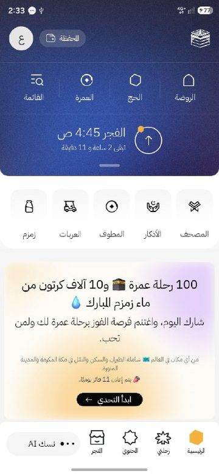
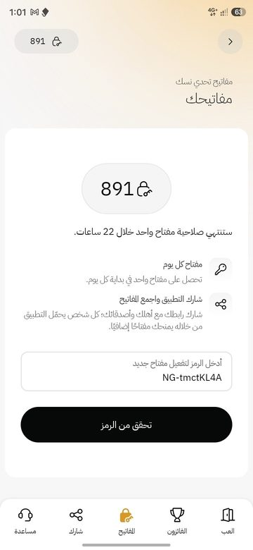
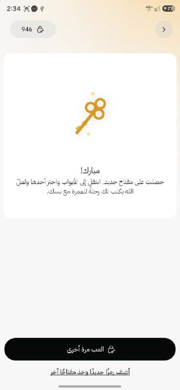
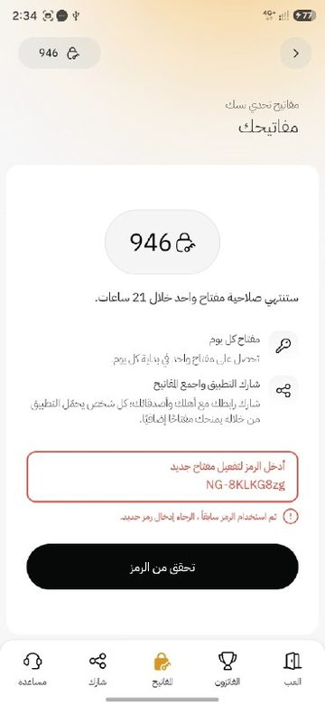

إزاي تاخد مفتاح بكل كود؟
▶ شوف الفيديو



الأكواد بتتضاف تلقائياً كل يوم. وعندك كود؟ ضيفه وخلّي غيرك يستفيد.
🤲 «لا يؤمن أحدكم حتى يحب لأخيه ما يحب لنفسه»شارك الصفحة مع أهلك وصحابك وجروباتك… يمكن ضغطة منك تكون سبب في عمرة لحد غيرك، و«الدال على الخير كفاعله».
▶ شرح بالفيديو
أو شوفه على يوتيوب ↗أسئلة شائعة عن أكواد مفاتيح نسك
ما هي مسابقة نسك؟
أطلقت وزارة الحج والعمرة عبر منصة نسك تحدياً جديداً يتيح للمشاركين فرصة الفوز بـ ١٠٠ رحلة عمرة مجانية لشخصين (الفائز ومرافق يختاره)، بالإضافة إلى ١٠ آلاف كرتونة من ماء زمزم المبارك.
خطوات الاشتراك في المسابقة:
- تحميل التطبيق: افتح تطبيق نسك على موبايلك وسجّل بياناتك.
- الدخول إلى التحدي: ادخل قائمة الخدمات واختار «اكتشف التحدي» ووافق على الشروط والأحكام.
- المفاتيح اليومية: هتاخد مفتاح واحد كل يوم عشان تبدأ تجاوب على الأسئلة.
- زيادة الفرص: شارك رابط التطبيق أو كودك مع أصحابك وقرايبك عشان تاخد مفاتيح زيادة تكبّر فرصتك في السحب.
- الإجابة: اختار باب من الأبواب الأربعة وجاوب على الأسئلة (عن القرآن الكريم والسيرة النبوية والمدينة المنورة والمسجد النبوي).
- السحب: الإجابة الصحيحة بتدخّلك السحب على الجوائز.
ما هي أكواد إحالة نسك؟
أكواد بتبدأ بـ NG- وبعدها ٨ حروف وأرقام، كل مشترك في تحدي نسك عنده كود. الصفحة دي بتجمع أكواد الناس في مكان واحد، وكل كود تتحقق منه في نسك بيضيفلك مفتاح.
كيف أستخدم كود تطبيق نسك؟
افتح تطبيق نسك الأول وسيبه مفتوح، وارجع هنا ودوس «افتح كود جديد». هينقلك لنسك والكود مكتوب جاهز، دوس «تحقق من الرمز». وبعدها ارجع هنا وافتح كود جديد تاني.
هل كود مفاتيح نسك هو نفسه كود الإحالة؟
أيوه، ناس كتير بتسميه «كود مفاتيح نسك» أو «رمز المفتاح»، وهو نفسه كود الإحالة اللي بيبدأ بـ NG-. وعدد المفاتيح وشروطها بتحددها نسك نفسها.
كيف يعمل تبادل أكواد تحدي نسك هنا؟
كل واحد بيضيف كوده، والأكواد بتتجمع كمان تلقائياً كل يوم. وزر «افتح كود جديد» بيفتحلك كل مرة كود ما فتحتهوش قبل كده. الصفحة مجانية ومن غير حساب ولا تسجيل.
لماذا لا يعمل بعض أكواد مفاتيح تطبيق نسك؟
ممكن الكود يكون مكتوب غلط أو مبقاش متاح، والصفحة مش بتقدر تتأكد من كل كود جوه نسك. لو ظهرت رسالة خطأ متقلقش: ارجع هنا وافتح كود جديد.
ما جوائز مسابقة نسك؟
حسب إعلانات التحدي: ١٠٠ رحلة عمرة مجانية لشخصين، و١٠ آلاف كرتونة مياه زمزم. الشروط والتفاصيل الرسمية في تطبيق نسك، والأكواد لوحدها مش بتضمن الفوز.
كيف أضيف كودي إلى القائمة؟
دوس «أضف كودك» فوق والصق الكود أو رابطه، أو حتى تعليقات كاملة فيها أكواد. بناخد الأكواد بس، والمكرر مش بيتضاف تاني.
هل هذه الصفحة تابعة لتطبيق نسك؟
لا. دي مبادرة شخصية مستقلة، ومش تابعة لتطبيق نسك ولا لوزارة الحج والعمرة ولا لأي جهة رسمية.
مبادرة مستقلة لتبادل أكواد تحدي نسك، لا تتبع تطبيق نسك ولا أي جهة رسمية.